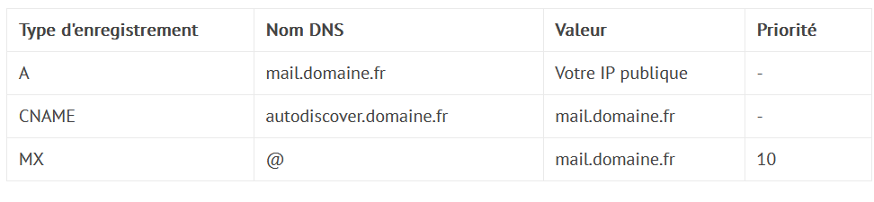

Exchange
Record DNS

MX → Mail exchange → Localiser les serveurs de messagerie associés à un nom de domaine.
→ Va permettre le routage des messages.
A → Indiquer l'IP v4 du serveur.
CNAME → Création d'alias.
TXT
SPF, DKIM, DMARC ?
Ce sont trois méthodes d'authentification du courrier électronique.
DKIM et SPF peuvent être comparés à une licence d'entreprise ou un diplôme de médecin accroché au mur. Ils aident à démontrer la légitimité.
DMARC indique aux serveurs de messagerie ce qu'ils doivent faire en cas d'échec de DKIM ou SPF, les marquer comme spam et les livrer, ou les abandonner.
Les domaines sans configuration SPF,DKIM,DMARC peuvent constater que leurs courriels sont mis en quarantaine comme spam ou ne sont pas remis à leurs destinataires. Ils risquent également de se faire usurper leur identité par des spammeurs.
Comment fonctionne le FPS ?
Le cadre Sender Policy Framework (SPF) est un moyen pour un domaine de répertorier tous les serveurs à partir desquels il envoie des e-mails. Considérez-le comme un annuaire des employés accessible au public qui permet de confirmer si un employé travaille pour une organisation.
Les enregistrements SPF répertorient toutes les adresses IP de tous les serveurs qui sont autorisés à envoyer des courriels à partir du domaine, tout comme un annuaire des employés répertorie les noms de tous les employés d'une organisation. Les serveurs de messagerie qui reçoivent un message électronique peuvent le comparer à l'enregistrement SPF avant de le transmettre à la boîte de réception du destinataire.
Comment fonctionne la norme DKIM ?
DomainKeys Identified Mail (DKIM) permet aux propriétaires de domaines de signer automatiquement "les courriels" provenant de leur domaine, tout comme la signature d'un chèque permet de confirmer l'identité de son auteur. La signature DKIM "" est une signature numérique qui utilise la cryptographie pour vérifier mathématiquement que le courriel provient du domaine.
Plus précisément, DKIM utilise la cryptographie à clé publique :
- Un enregistrement DKIM stocke la clé publique du domaine, et les serveurs de messagerie qui reçoivent des e-mails du domaine peuvent vérifier cet enregistrement pour obtenir la clé publique.
- La clé privée est gardée secrète par l'expéditeur, qui signe l'en-tête du courriel avec cette clé
- Les serveurs de messagerie qui reçoivent le courrier électronique peuvent vérifier que la clé privée de l'expéditeur a été utilisée en appliquant la clé publique.
Comment fonctionne DMARC ?
Le système DMARC (Domain-based Message Authentication Reporting and Conformance) indique au serveur de messagerie récepteur ce qu'il doit faire en fonction des résultats de la vérification de SPF et DKIM. La politique DMARC d'un domaine peut être définie de différentes manières : elle peut demander aux serveurs de messagerie de mettre en quarantaine les courriels qui ne répondent pas aux critères SPF ou DKIM (ou les deux), de les rejeter ou de les distribuer.
Les politiques DMARC sont stockées dans enregistrements DMARC. Un enregistrement DMARC peut également contenir des instructions permettant d'envoyer des rapports aux administrateurs de domaines sur les courriels qui passent ou échouent ces contrôles. Les rapports DMARC fournissent aux administrateurs les informations dont ils ont besoin pour décider de l'ajustement de leurs politiques DMARC (par exemple, que faire si des e-mails légitimes sont marqués par erreur comme spam).
Connecter Exchange sur internet